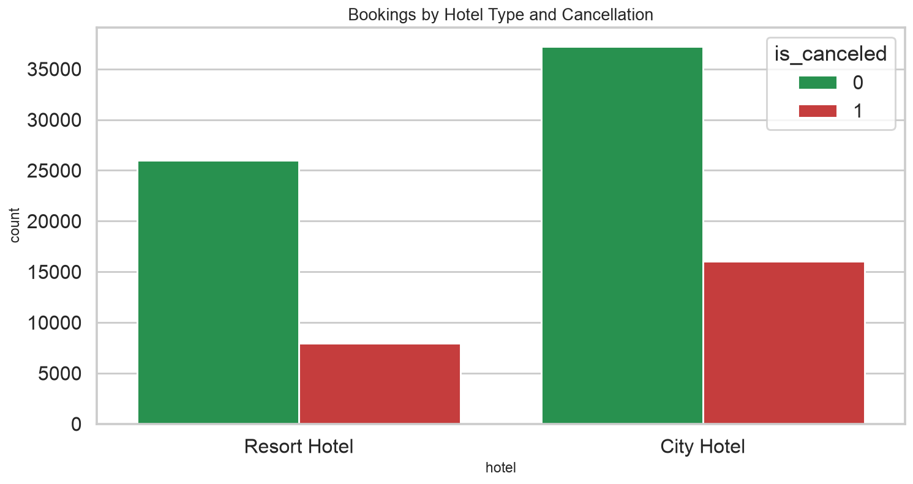
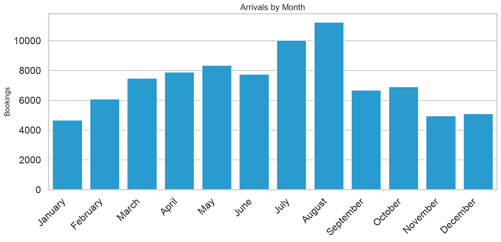
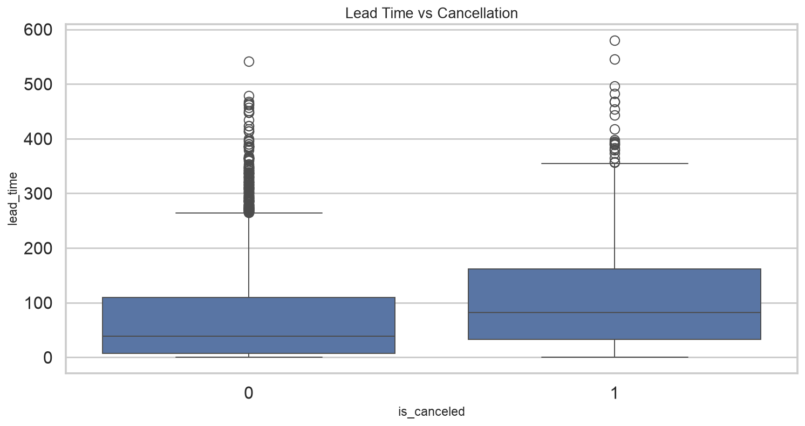
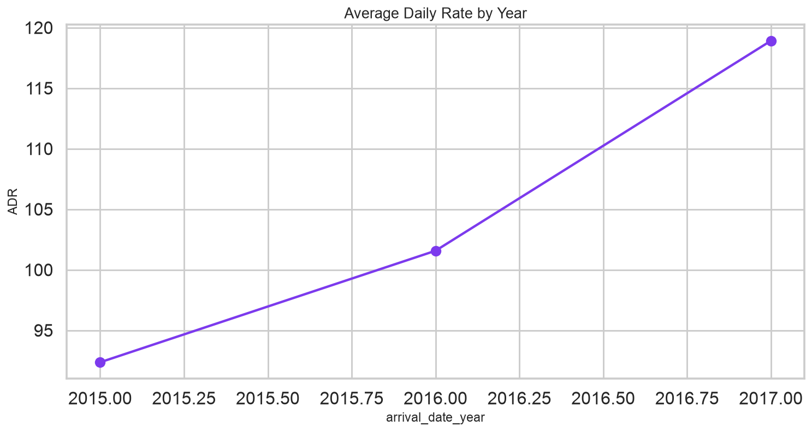
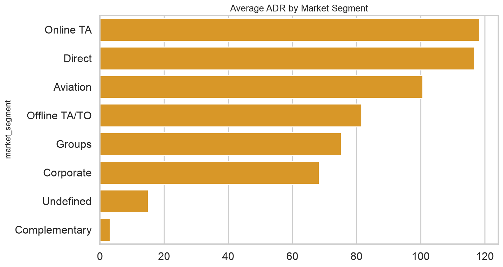
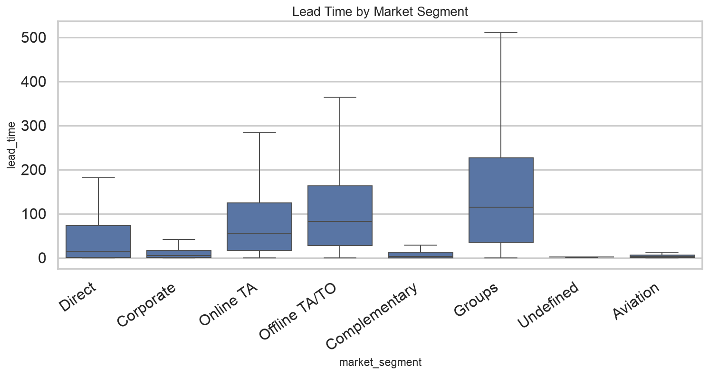

1
Overview
Elite Hotels International reviews city and resort booking history to stabilize occupancy, cut avoidable cancellations, and price rooms using ADR and channel mix.
- Internal: Management, Operations, Marketing, Customer Service
- External: Guests, Travel agencies, Suppliers
2
Problem Statement
Booking patterns and guest satisfaction are uneven across hotels, channels, and seasons. Management needs evidence on lead time, cancellations, demand peaks, and revenue so operations and marketing can allocate rooms, staff, and promotions more effectively.
3
Proposed Methodology
- Clean missing agent/company/children fields, parse arrival dates, drop duplicates and zero-guest rows.
- Define metrics: lead time, cancellation rate, stay length, special requests, and ADR-based revenue.
- Profile demand by hotel type, month, market segment, and country.
- Relate lead time and deposit type to cancellations; fit a logistic baseline.
- Convert findings into overbooking, pricing, and loyalty actions.
4
Data Overview
- rows_raw: 119390
- rows_clean: 87229
- cancellation_rate: 0.2752
- hotels: {'City Hotel': 53273, 'Resort Hotel': 33956}
- years: [2015, 2016, 2017]
- average_stay_nights: 3.63
- realized_stay_share: 0.7248
- hotel: Resort Hotel or City Hotel
- is_canceled: 1 if canceled, else 0
- lead_time: Days between booking and arrival
- arrival_date_*: Arrival year, month, week, day
- stays_in_weekend_nights / stays_in_week_nights: Nights booked
- adults / children / babies: Party composition
- country: Guest country of origin
- market_segment: Market segment
- distribution_channel: Booking channel
- adr: Average daily rate
- deposit_type: No Deposit, Non Refund, Refundable
- total_of_special_requests: Count of special requests
- reservation_status: Canceled, Check-Out, No-Show






5
Key Findings
- Overall cancellation rate is 27.5% after cleaning.
- Guests book about 80 days ahead on average; longer lead times track with more cancellations (r=0.18).
- August is the busiest arrival month; August leads ADR × stay revenue.
- PRT and other top origin markets dominate volume; PRT is the single largest country.
- A logistic model using lead time, deposit, segment, and requests reaches AUC 0.77 on a hold-out set.
6
Limitations
- The public dataset covers two hotels in Portugal, not a global brand.
- ADR is not full P&L; extras, commissions, and costs are missing.
- Company and agent IDs are anonymized and heavily missing.
- Guest satisfaction is proxied by requests and repeats, not survey scores.
- Cancellation model is explanatory, not a production overbooking engine.
7
Conclusion
Demand is seasonal and channel-dependent. City vs resort mix, non-refundable deposits, and long lead times are the practical levers for cancellation control, while ADR and segment mix drive revenue planning.
8
Recommendations
- Tighten deposit or reminder policies on long-lead leisure bookings with high cancel risk.
- Staff and price for the summer/peak-month wave rather than a flat annual plan.
- Protect relationships with TA/TO and Direct channels that carry volume.
- Use parking and special-request data to design upsell packages, not only room rate.
- Build a repeat-guest offer; loyalty stays look different from first-time transient stays.
Appendix
Solution guide (assignment questions)
Basic questions
- Average lead time79.97
- Bookings by hotel type{'City Hotel': 53273, 'Resort Hotel': 33956}
- Canceled bookings24008
- Most common arrival monthAugust
- Average special requests0.699
- Country with most bookingsPRT
- Average ADR by hotel type{'City Hotel': 111.17, 'Resort Hotel': 99.06}
- Share requiring parking0.0838
- Average week/weekend nights{'week': 2.62, 'weekend': 1.0}
- Bookings with a travel agent id75088
Medium questions
- Cancellation rate by hotel{'City Hotel': 0.301, 'Resort Hotel': 0.2348}
- Average ADR by market segment{'Aviation': 100.61, 'Complementary': 3.09, 'Corporate': 68.34, 'Direct': 116.78, 'Groups': 75.17, 'Offline TA/TO': 81.57, 'Online TA': 118.3, 'Undefined': 15.0}
- Lead time vs cancellation correlation0.1845
- Top distribution channels{'TA/TO': 69027, 'Direct': 12954, 'Corporate': 5062, 'GDS': 181, 'Undefined': 5}
- Average previous cancellations by hotel{'City Hotel': 0.036, 'Resort Hotel': 0.022}
- ADR trend by year{2015: 92.36, 2016: 101.57, 2017: 118.91}
- Highest revenue month (ADR x nights)August
- Special requests vs ADR correlation0.1464
- Stay length repeat vs new guests{0: 3.7, 1: 1.95}
- Most booked reserved room types{'A': 56435, 'D': 17376, 'E': 6036, 'F': 2820, 'G': 2050}
Advanced questions
- Logistic model AUC for cancellation0.7658
- Strongest cancellation drivers (coefficients){'deposit_type_Non Refund': 2.265, 'deposit_type_No Deposit': -1.502, 'deposit_type_Refundable': -0.999, 'market_segment_Online TA': 0.847, 'market_segment_Offline TA/TO': -0.69, 'total_of_special_requests': -0.552, 'lead_time': 0.444, 'customer_type_Transient': 0.422}
- ADR vs party composition (linear coefficients){'adults': 20.698, 'children': 38.649, 'babies': 6.723, 'intercept': 62.118}
- Booking changes vs special requests correlation0.0183
- Seasonal cancellation rates{'Autumn': 0.2334, 'Spring': 0.2813, 'Summer': 0.3158, 'Winter': 0.2409}
- Lead time median by market segment{'Aviation': 3.0, 'Complementary': 3.0, 'Corporate': 5.0, 'Direct': 15.0, 'Groups': 115.0, 'Offline TA/TO': 82.0, 'Online TA': 55.0, 'Undefined': 1.5}
Appendix
Additional resources
- https://www.kaggle.com/jessemostipak/hotel-booking-demand
- https://www.sciencedirect.com/science/article/pii/S2352340918315191
- docs/CASE_STUDY.md, docs/SOLUTION_GUIDE.md